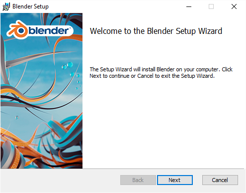

在 MS-Windows 上安装¶
如果还不清楚的话，先查看 最小软硬件需求和下载Blender。
还需要 Visual C++ 2013Redistributable Package。
下载对应架构(如果电脑支持64位是最好的)的 .zip 或 .exe 文件。
打开 .msi 安装器，选择Blender存放位置，并配置添加MS-Windows开始菜单以及使用Blender打开.blend后缀的文件。安装Blender时需要系统管理员权限。

MS-Windows安装器。
Note
.zip 文件需要手动解压Blender到指定的文件夹，然后双击可执行文件运行Blender。
这不会在开始菜单自动添加快捷方式，不过这种方法不需要管理员权限。这样一来，系统可以同时存在多个版本的Blender，并且不会冲突，因为它们都没有被安装在系统中。
不过，如果需要在系统注册特定版本的Blender，可以在 命令行 运行 blender -r。